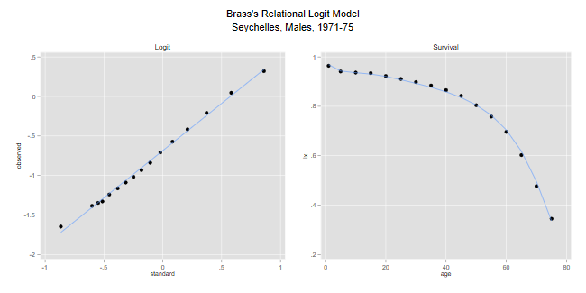
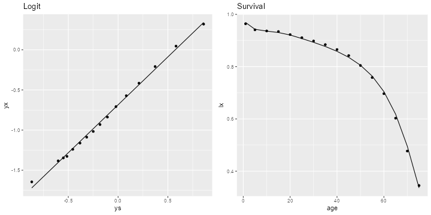

<h2 id="relational-logit-models">Relational Logit Models</h2>
<p>We illustrate fitting Brass’s relational logit model using data from
the Seychelles.</p>
<h3 id="seychelles-males-1971-75">Seychelles Males, 1971-75</h3>
<p>Here’s a small dataset with the observed survival function for
Seychelles males in 1971-75. We also include Brass’s standard for
convenience. (Alternatively, the Brass standard is available in five and
single-year forms in Stata files in the datasets section, so you can
merge on age; the files are called <code>Brassrlm1.dta</code> and
<code>Brassrlm5.dta</code>.)</p>

{% include srtabs.html %}

<pre class='stata'>. infile age lx ls using ///
>   https://grodri.github.io/datasets/seychelles.dat, clear
(16 observations read)
</pre>
<pre class='r'>> sc &lt;- read.table("https://grodri.github.io/datasets/seychelles.dat",
+   header = FALSE, col.names = c("age","lx","ls"))
</pre>
<p>We generate Brass logits and plot the logits of the observed and
standard survival functions to see if the relationship is linear.</p>
<pre class='stata'>. gen yx = 0.5*log( (1-lx)/lx)

. gen ys = 0.5*log( (1-ls)/ls)

. twoway (scatter yx ys) (lfit yx ys), name(a, replace) ///
>   ytitle(observed) xtitle(standard) title(Logit) legend(off)
</pre>
<pre class='r'>> library(dplyr)
> library(ggplot2)
> sc &lt;- mutate(sc, yx = 0.5*log( (1-lx)/lx), ys = 0.5*log( (1-ls)/ls))
> lf &lt;- lm(yx ~ ys, data=sc)
> sc$yfit &lt;- fitted(lf)
> g1 &lt;- ggplot(sc, aes(x = ys, y = yx)) + geom_point() + 
+   geom_line(aes(x = ys, y = yfit)) + ggtitle("Logit") 
</pre>
<p>The fit is not bad at all. Here are the parameter estimates, and the
fitted survival, which we plot on a second panel:</p>
<pre class='stata'>. reg yx ys

      Source │       SS           df       MS      Number of obs   =        16
─────────────┼──────────────────────────────────   F(1, 14)        =   4557.24
       Model │   4.5875726         1   4.5875726   Prob > F        =    0.0000
    Residual │  .014093195        14  .001006657   R-squared       =    0.9969
─────────────┼──────────────────────────────────   Adj R-squared   =    0.9967
       Total │  4.60166579        15   .30677772   Root MSE        =    .03173

─────────────┬────────────────────────────────────────────────────────────────
          yx │ Coefficient  Std. err.      t    P>|t|     [95% conf. interval]
─────────────┼────────────────────────────────────────────────────────────────
          ys │   1.193756   .0176834    67.51   0.000     1.155829    1.231683
       _cons │  -.6851507   .0082767   -82.78   0.000    -.7029025   -.6673989
─────────────┴────────────────────────────────────────────────────────────────

. predict yf
(option xb assumed; fitted values)

. gen lf = 1/(1+exp(2*yf))

. twoway (scatter lx age) (line lf age), name(b, replace) ///
>   ytitle(lx) title(Survival) legend(off)

. graph combine a b, title(Brass's Relational Logit Model) ///
>   subtitle("Seychelles, Males, 1971-75") xsize(6) ysize(3)

. graph export seym71rlm.png, replace
file seym71rlm.png saved as PNG format
</pre>
<p></p>
<pre class='r'>> library(gridExtra)
> sc &lt;- mutate(sc, lfit = 1/(1 + exp(2 * yfit )))
> g2 &lt;- ggplot(sc, aes(x = age, y = lx)) + geom_point() + 
+   geom_line(aes(x = age, y = lfit)) + ggtitle("Survival")
> g &lt;- arrangeGrob(g1, g2, ncol=2)
> ggsave("seym71rlmr.png", plot=g, width=10, height=5, dpi=72)
</pre>
<p></p>
<p>The parameter estimates could be used, for example, to generate a
single-year life table</p>
<pre class='stata'>. drop _all

. use https://grodri.github.io/datasets/brassrlm1
(Brass Relational Logit Model Standard - Manual X)

. predict yf
(option xb assumed; fitted values)

. gen lf = 1/(1+exp(2*yf))

. list age lf in 1/5

     ┌────────────────┐
     │ age         lf │
     ├────────────────┤
  1. │   1   .9689398 │
  2. │   2   .9559698 │
  3. │   3   .9495305 │
  4. │   4   .9455815 │
  5. │   5   .9430202 │
     └────────────────┘
</pre>
<pre class='r'>> library(haven)  
> rlm1 &lt;- read_dta("https://grodri.github.io/datasets/brassrlm1.dta")
> yfit1 &lt;- predict(lf, newdata=rlm1)
> cbind(1:5, 1/(1 + exp(2 * yfit1[1:5])))  
  [,1]      [,2]
1    1 0.9689398
2    2 0.9559698
3    3 0.9495305
4    4 0.9455815
5    5 0.9430201
</pre>
<p>The relational logit model doesn’t always fit well. Typically, lack
of fit is noticed at the young and old ages. Zaba(1979) proposed a
4-parameter extension that incorporates two patterns of deviations from
the standard and improves the R-squared to 0.9997. Ewbank, De Leon and
Stoto (1983) proposed an alternative extension that uses different power
transformations at young and old ages, converging to the logit as the
powers approach 0. They also proposed a small revision of the standard
below age 15. Both extensions are non-linear in the additional
parameters and thus hard to fit, although the authors provide ingenious
approximate estimation procedures. More recently Murray et al (2003)
proposed a modified system that starts from the logit transformation but
adds two sets of age-specific coefficients which adjust for under-five
and adult survivorship.</p>
<p>For further discussion of model life tables, including the Princeton
regional series of Coale, Demeny and Vaughan (1983) and the
log-quadratic system of Wilmoth et al. (2012), see <a
href="http://demographicestimation.iussp.org/content/introduction-model-life-tables">Tools
for Demographic Estimation</a>.</p>
